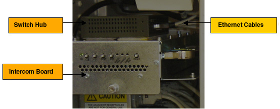

Illustration 5: Power Cord of Hub

Remove five (5) Ethernet cables from the Hub, add a label to each Ethernet cable if necessary, as shown below:
Illustration 4: Ethernet Cables

Remove the power cord of Hub at rear panel, then remove the Hub from the Intercom Board. A screw driver can be used if it is difficult to remove the Hub, as shown below:
Illustration 5: Power Cord of Hub